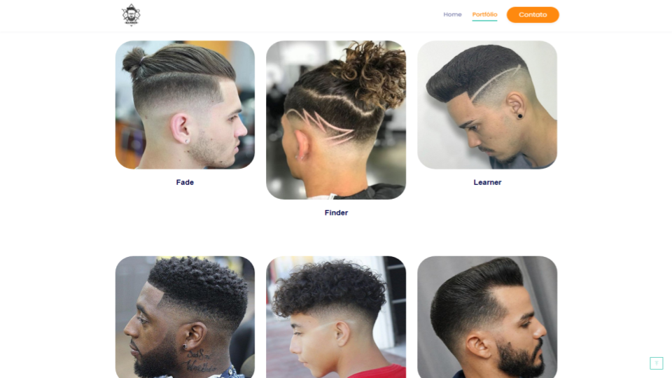
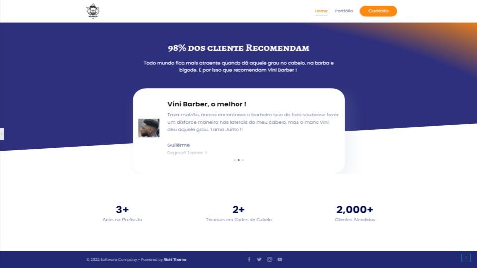

Esse projeto, fiz para a Barbearia de uma amigo, como ele é barbeiro solo, no momento oferece apenas cortes de cabelo a domicílio, apresentar esse a internet e engajar o site dentro da cidade Salvador, seria uma grande jogada de Marketing e oportunidade de criar uma rede de clientes.